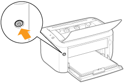
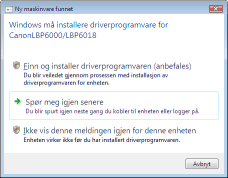
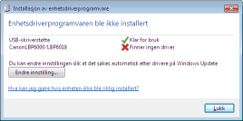
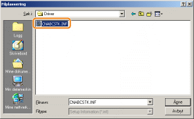
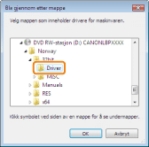
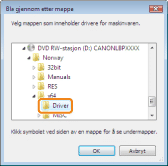
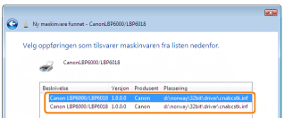

1
Koble til USB-kabelen.
2
Skru PÅ skriveren.

3
Skru på datamaskinen og logg deretter på Windows som en bruker med administrative rettigheter.
|
→
|
Skjermbildet for automatisk oppsett med Plug and Play vises.

|
 Hvis skriverdriveren er installert automatisk Hvis skriverdriveren er installert automatiskHvis du installerte skriverdriveren for denne skriveren tidligere, installeres driveren automatisk.
Hvis du vil oppdatere skriverdriveren (eller ønsker å installere den manuelt), installer skriverdriveren etter å ha avinstallert den først.
Hvis følgende skjermbilde vises
Det kan hende at du ikke kan installere skriverdriveren ordentlig på grunn av Windows-restriksjonene, selv etter at skriveren er blitt oppdaget av Plug and Play. Klikk på [Lukk], og installer deretter skriverdriveren på nytt i "Enkel installasjon".
|
4
Følg instruksjonene på skjermen for å installere skriverdriveren.
|
MERK
|
||
|
Ved valg av filen eller mappen der skriverdriveren ligger.
Velg en av følgende filer og mapper:
 Velg [CNABCSTK.INF] i mappen [Norway] - [32bit] - [Driver] på vedlagt CD-ROM.
     For et 32-biters operativsystem
Velg disse mappene på vedlagt CD-ROM: [Norway] - [32bit] - [Driver].
 For et 64-biters operativsystem
Velg disse mappene på vedlagt CD-ROM: [Norway] - [x64] - [Driver].

Hvis skjermbildet for å velge skriverdriver vises
Selv om en av skriverdriverne er valgt, er det ikke noe problem med installasjonen siden samme skriverdriver er valgt.

|

|
Når installeringen er fullført, er det opprettet et ikon og en mappe for denne skriveren.
 "Etter installasjon" "Etter installasjon" |